零代码绘制发表级scATAC高级分析图片
原文：https://mp.weixin.qq.com/s?__biz=MzAwMzIzOTk5OQ==&mid=2247529843&idx=1&sn=e3f81a9cf9ca48d4b1ea871279a42b73&chksm=9b3c0c23ac4b85352bc73be107b876f529be2e14d2fdbc36ec4c6af148e24af2fe5eba1d254f#rd 合集：单细胞云平台
写在前面
单细胞表观遗传及其它多模态已然成为scRNA的新趋势，我们也一直致力于给大家分享代码注释丰富、测试文件齐全的教程。此前我们分享了4.6w字长文| SeekOne®-DD单细胞ATAC+RNA一胞双组学-学习手册。有同学表示学起来压力山大，想要一款能够界面化、适合零代码基础小白的一款软件。
别痛苦了，scATAC已经能零代码分析啦，现SeeksoulOnline已经内置了几十种高级分析，包含monocle3、cellphonedb、infercnv、scenic、monocle2、DiffEnrich、CytoTRACE、CellChat、scMetabolism、copyKAT、GSVA、Nichenet、scVelo、scoring、group_diffenrich、Augur、hdWGCNA、GeneActivity、ATAC_Peak2Gene共19种高级分析，支持的物种有人、鼠、大鼠(部分分析)、苍蝇(部分分析)。本篇推送就带大家来实操一下，谈谈SeeksoulOnline中的scATAC高级分析。
分析集锦，零代码绘制发表级图片：
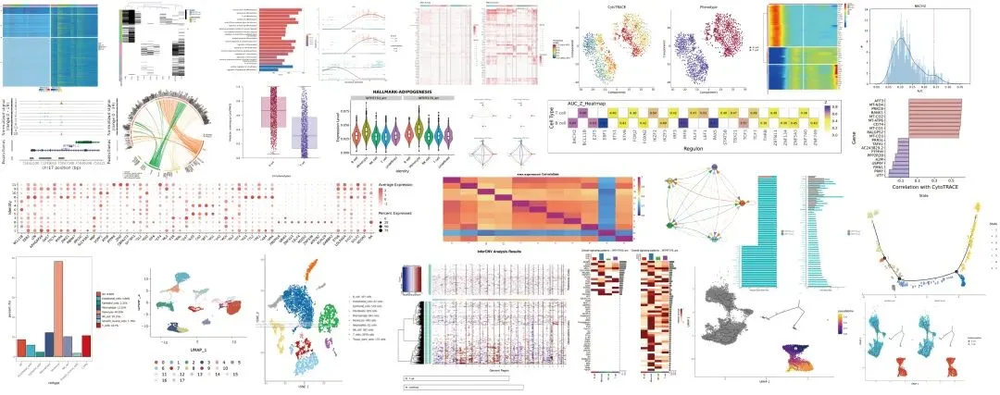
云平台地址：
https://seeksoul.online/t_static/Biomamba/Biomamba.html
使用教程可见：
云平台已经悄咪咪更新了很多新功能供大家选择下文我们也将演示scATAC的零代码基础分析流程：
| 软件包/云平台包名称 | 云平台更新内容 | 功能分类 | 作用 |
|---|---|---|---|
| signac | 细胞类型uMAP/tSNE降维图（ATAC、RNA、ATAC+RNA 三种降维结果） | 降维聚类 | 将高维的单细胞 ATAC 和 RNA 数据投影到二维空间，直观展示细胞间的相似性与异质性，识别细胞亚群结构。 |
| signac | 样本uMAP/tSNE降维图（ATAC、RNA、ATAC+RNA 三种降维结果） | 降维聚类 | 通过整合多组学特征，揭示不同样本间的细胞组成差异。 |
| signac+寻因AI | SingleR+AI注释 | 细胞注释 | 基于已知标记基因库和 AI 算法，自动识别单细胞类型（如 T 细胞、巨噬细胞），提高注释准确性与效率。 |
| signac | peak鉴定 | 可视化 | 识别染色质开放区域（peak），并在基因组上定位，辅助调控元件发现与可视化。 |
| GeneActivity | 基因活性分析 | ||
| 通过 peak 与基因启动子 / 增强子的关联性，推断基因表达调控活性，弥补 ATAC 数据与 RNA 表达的直接关联缺口。 | |||
| ATAC_diffEnrich | 差异peak分析 | 差异分析 | 比较不同细胞群体间染色质开放区域的差异，发现潜在的细胞特异性调控元件。 |
| ATAC_diffEnrich | peak富集分析 | 富集分析 | 对差异 peak 进行功能注释（如 GO/KEGG 通路），解析调控元件参与的生物学过程。 |
| ATAC_diffEnrich | 差异motif分析 | motif分析 | 识别差异 peak 中的转录因子结合基序（motif），预测潜在的上游调控因子。 |
| ATAC_Peak2Gene | Peak2GeneLink关联分析 | peak gene联合分析 | 整合 ATAC 的 peak 数据与 RNA 表达，建立非编码调控元件（如增强子）与靶基因的功能性联系，解析基因表达调控网络。 |
| ataCNV、epiAneufinder、CopyscAT | ATAC 数据CNV分析 | 肿瘤细胞分析 | 通过 ATAC-seq 数据中染色质可及性的拷贝数变异（CNV），识别肿瘤细胞克隆及其演化关系，辅助肿瘤异质性研究。 |
云平台现开放用户自行上传数据一键分析，5例/季度免费分析联系客服微信[Biomamba_zhushou]开通权限。 注，为了保证界面演示的完整性，图中的文字可能有些小，请点击拉大观看哦~
一、轨迹分析
先提交一下单细胞常见的拟时序分析(代码版可见：一文学会四种scRNA-seq轨迹分析)，这里用monocle3做演示，不了解root节点和拆分因子的可以看看零代码单细胞| 拟时序分析。进阶分析一般需要一定的运行时间，SeeksoulOnline在执行完任务后会邮件提醒大家来"收结果"。 1、monocle3
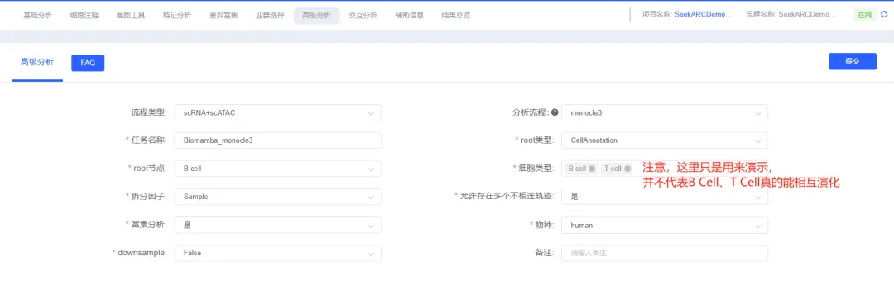
2、monocle2monocle2同样也是支持的：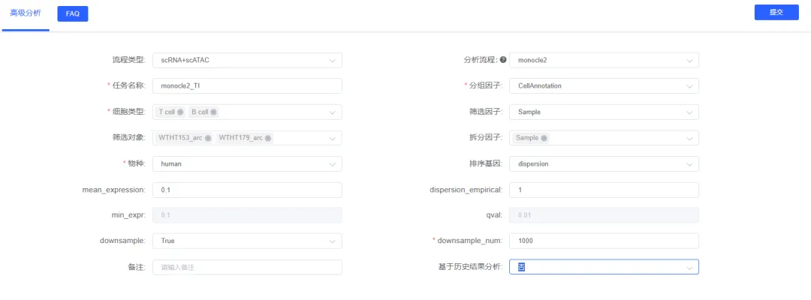
3、CytoTRACE也是一种选择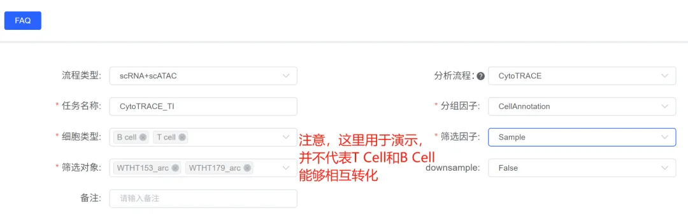
二、细胞通讯分析
详细教程可见零代码单细胞| 细胞通讯分析，代码版可参考一文学会四种scRNA-seq细胞通讯分析，这里用于细胞通讯的是RNA矩阵。同样是填好配置文件后提交任务即可：1、CellPhoneDB
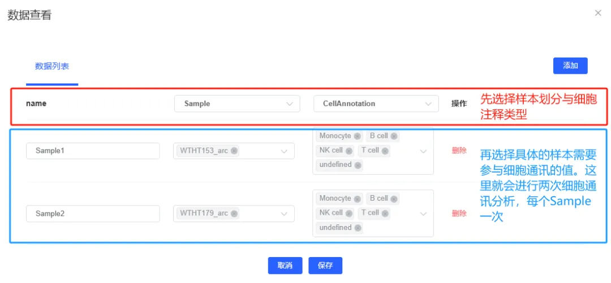
2、CellChat代码教程可见：《细胞通讯》CellChat学习手册，在这里，你同样可以通过填写几个参数来完成这个分析。
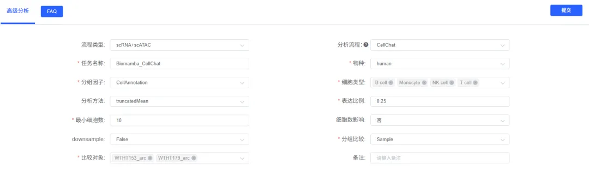
3、NicheNet
NicheNet能够根据分组间配受体的差异表达并考虑到细胞内配受体下游基因的表达量变化进行细胞通讯预测。也就是说，你在利用NicheNet进行细胞通讯时可以也必须选择处理组和对照组进行分组比较。详细代码逻辑可参考：一文学会四种scRNA-seq细胞通讯分析
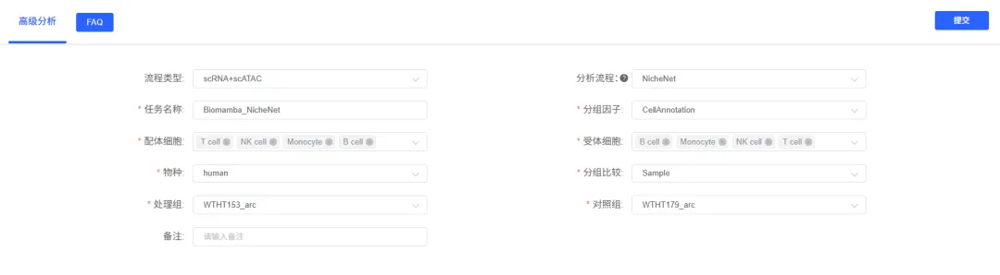
三、拷贝数变异
拷贝数变异分析是肿瘤分型的利器，详细教程可见单细胞拷贝数变异学习手册。这里的测试流程是一个普通的pbmc数据，我们可以用T Cell作为无拷贝数变异的参考，undefined类型作为受试细胞群填好参数：
1、infercnv
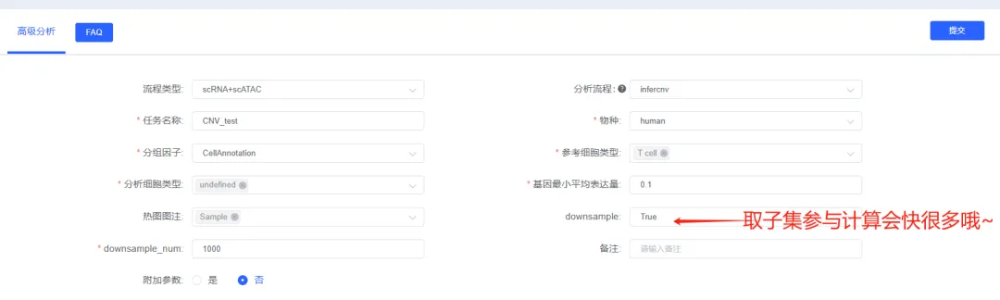
2、copyKAT
copyKAT也是支持的，并且copyKAT不用选择参考细胞类型：
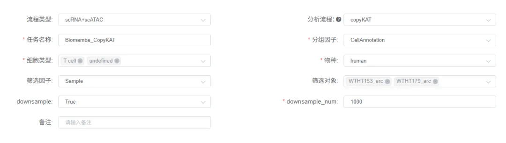
四、SCENIC转录因子计算
详细使用教程可见：零代码单细胞| 转录因子调控，记得downsample取子集来加速运算，否则SCENIC的计算会很慢哦~
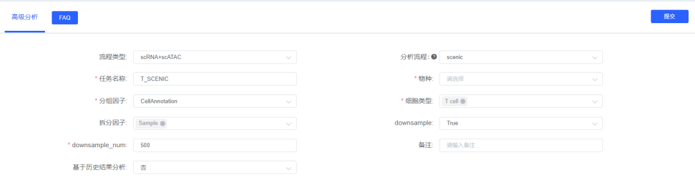
五、差异分析+富集分析
选择细胞类型进行差异分析+富集分析，具体教程可见：零代码单细胞| 差异分析与富集分析，选择差异倍数和表达比例后可自动过滤差异基因。
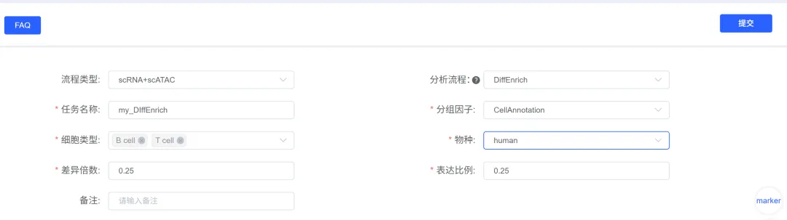
七、基因集评分
基因集分析也是scRNA-seq中的一种重要分析手段，能够实现从通路角度对单细胞数据进行观测，从而更好的评估细胞/分组间的生物学差异。零代码教程可见：零代码分析单细胞测序数据| 基因集分析，代码教程可见一文搞定单细胞基因集评分。1、scMetabolismscMetabolism就预置了人的代谢基因集，包括85条KEGG通路和82条REACTOME条目，可以一键完成scRNA-seq数据集的代谢评分，支持VISION、AUCell两种评分算法：
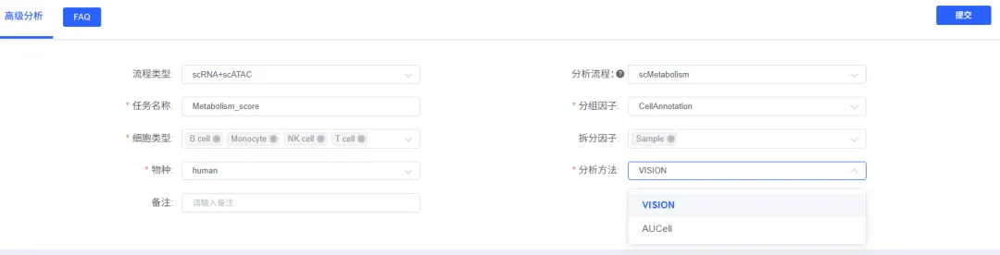
2、GSVAGSVA也是基因集评分工具的一种，我们曾制作过代码版教程：一文搞定GSVA及下游分析的代码实现。在这里，我们预置了GSEA中的基因集用于GSVA的评分。
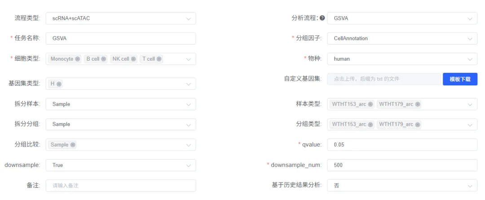
3、scoringscoring模块中提供了AUCell、UCell、singscore、AddModulescore等方法供基因集评分，并且可以在umap/tsne上展示评分结果。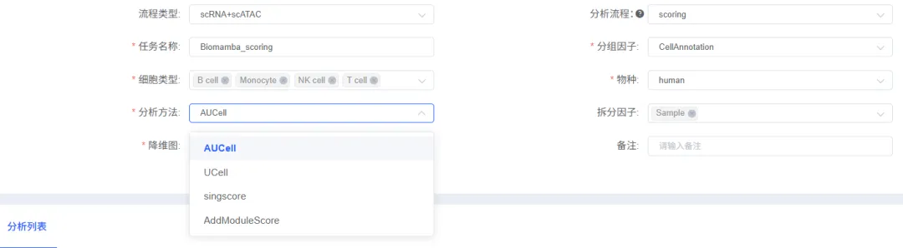
八、表型分析
1、AugurAugur 通过独特的算法，能够从众多细胞类型中，找出与实验条件（如疾病状态、药物治疗、环境变化等扰动因素）最相关的细胞类型。例如，在研究疾病发生机制时，它可以帮助确定哪些细胞类型在疾病发展过程中发生了显著变化，这些变化可能是疾病发生的关键因素。例如这里我们来研究两个样本T Cell、B Cell的样本间扰动：
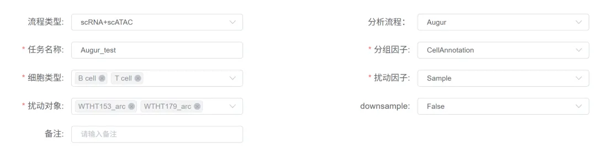
2、hdWGCNA代码版教程可参考一文搞定单细胞/空间转录组的WGCNA分析，hdWGCNA是WGCNA的单细胞/空转版本，能够通过基因/通路评分进行模块划分，并研究各模块与表型之间的关联。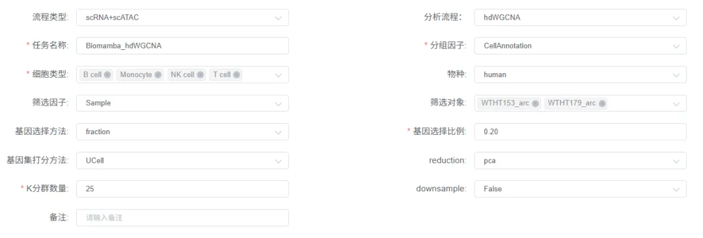
九、ATAC特色分析
1、差异分析
终于说道ATAC的特色分析了，SeekOne®-DD单细胞ATAC+RNA一胞双组学的优势就是在于可以捕获到同一个单细胞的RNA与ATAC矩阵；相应的通过RNA差异与ATAC的peaks差异来进行交互是一个验证基因调控的极佳方法。
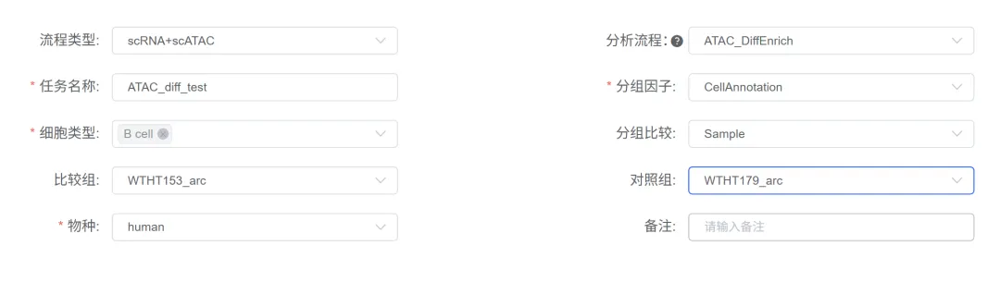
2、基因活性评估
评估的同时还能顺便做一下差异分析：
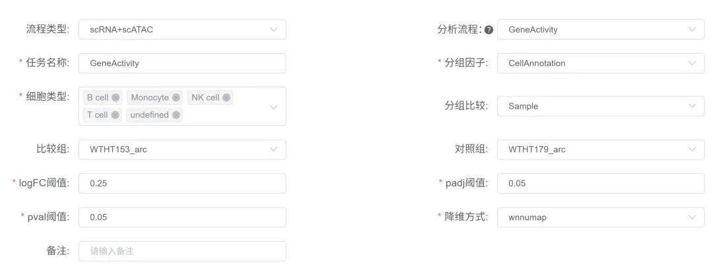
还有多种降维方式可供选择：
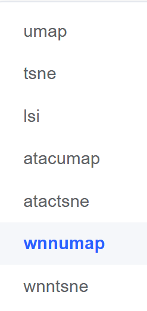
3、Peak2Gene
scATAC得到的数据并不是基因名 X barcode名称的数据(因为大量reads会落在非编码区域)，数据的行名通常是染色体名-reads起点-reads终点，这就需要将其转化为基因Xbarcode矩阵。
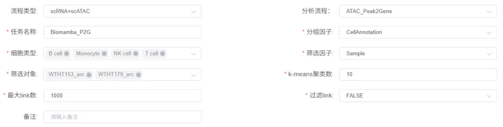
十、辅助信息与结题报告
1、进程管家在下面的分析列表中可以查看自己任务的分析进程与结果。
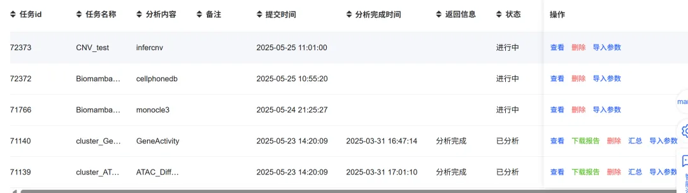
分析完成时会抄送邮件通知，挂上任务安心喝咖啡~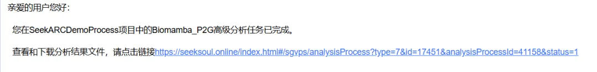
2、结题报告在seeksoul.online中下载链接：通过网盘分享的文件：
通过网盘分享的文件：scATAC云平台高级分析报告
链接: https://pan.baidu.com/s/1MQWlhhq9sTVFYeNjIKoqFQ?pwd=2udh
提取码: 2udh
视频教程
本系列视频我们将进行拆解动作，完整视频教程可见合集：
总是有小伙伴在学我们的单细胞代码 教程(两百篇单细胞知识帖)时深感头疼，密密麻麻的代码、繁琐的流程、巨大的数据量，这些都是劝退大家的门槛。这对这一现象，Biomamba 联合寻因生物 发布了科研利器——SeekSoul Online单细胞云平台 及对应的**《 2周教你学会单细胞生信全套分析》课程，准备好零代码** 发单细胞文章吧！
云平台访问链接：https://seeksoul.online/t_static/Biomamba/Biomamba.html
往期云平台使用视频教程可参考：单细胞云平台教程全收录
体验反馈问卷链接：https://www.wjx.cn/vm/QIX0xRI.aspx#
各位同学需要联系您的专属在线客服，获取demo数据后，进行操作学习。


如何联系我们

 留一个领取资料、开箱即用的单细胞分析镜像的微信号[Biomamba_zhushou]，方便各位随时交流。同时我们也构建了交流群矩阵，欢迎大家入群讨论。
大家可以阅读完这几篇之后添加给生信入门初学者的小贴士
没有检索，就没有发言权
留一个领取资料、开箱即用的单细胞分析镜像的微信号[Biomamba_zhushou]，方便各位随时交流。同时我们也构建了交流群矩阵，欢迎大家入群讨论。
大家可以阅读完这几篇之后添加给生信入门初学者的小贴士
没有检索，就没有发言权
已有生信基地联系方式的同学无需重复添加

 您点的每个赞和在看，我都认真当成了喜欢
您点的每个赞和在看，我都认真当成了喜欢